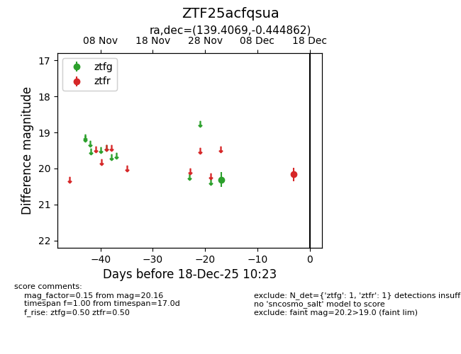
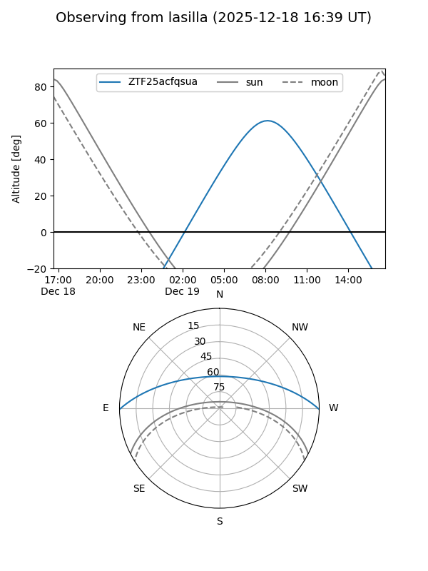
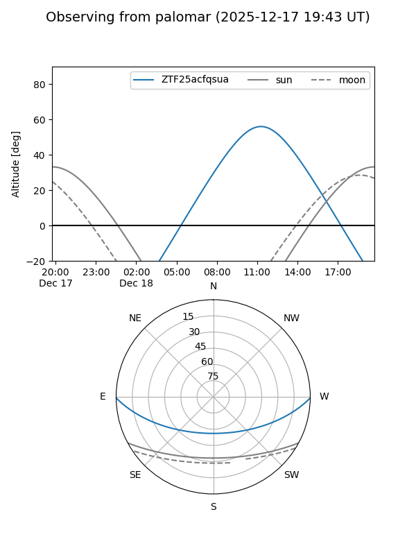

ZTF25acfqsua
Target ZTF25acfqsua at 2025-12-18 11:18
Aliases and brokers:
FINK: fink-portal.org/ZTF25acfqsua
Lasair: lasair-ztf.lsst.ac.uk/objects/ZTF25acfqsua
ALeRCE: alerce.online/object/ZTF25acfqsua
alt names
ZTF25acfqsua (ztf,fink_ztf)
Coordinates:
equatorial (ra, dec) = 139.4069,-0.44486
equatorial (HMS+DMS) = 09:17:37.66,-00:26:41.50
galactic (l, b) = (232.0481,+31.76395)
Photometry
last ztfg=20.31, ztfr=20.16
1 ztfg, 1 ztfr detections
Lightcurve

Visibility


Additional plots